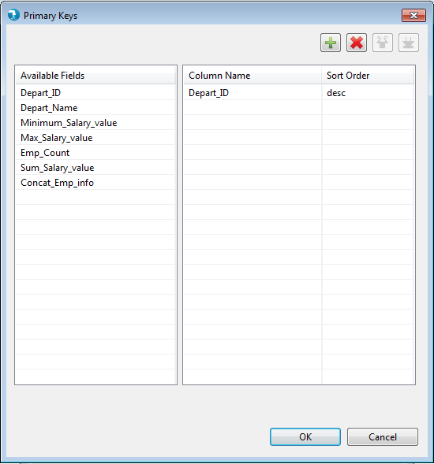
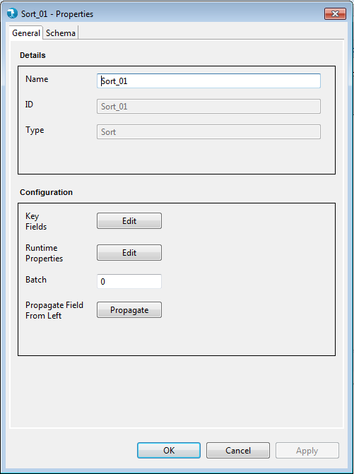
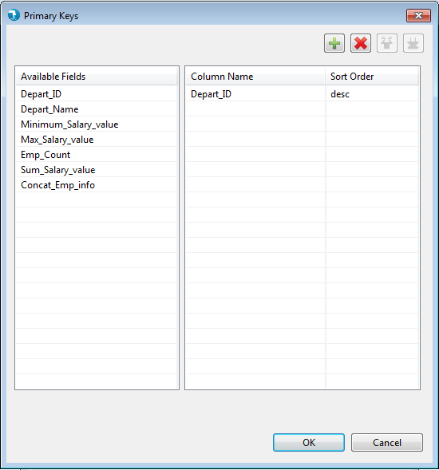
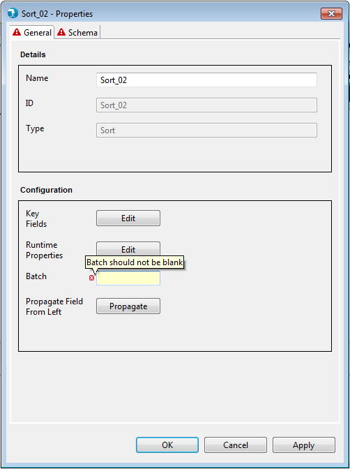

Check How to pass Hadoop properties to component

Sort Properties
Properties for the Sort component can be viewed by Double click->component on canvas. The properties contain only the 'General' tab since Sort falls under the Straight Pull category in the component palette.
General Properties:

Display
Configuration

Check How to pass Hadoop properties to component
Validations
The Sort components applies validations to the mandatory fields as described above. Upon placing the Sort component on job canvas for the first time (from component palette), the component shows up a warning icon as mandatory properties are not provided.

The properties window also displays error icon on mandatory fields if it has an incorrect value. The error icon is displayed on the tab as well, if any of the field within the tab has some error.

If the properties window has some error even after user visit's it once, then the warning icon on the Sort component on the job canvas changes to error icon. This error icon is removed only when all the mandatory fields are supplied with correct values.